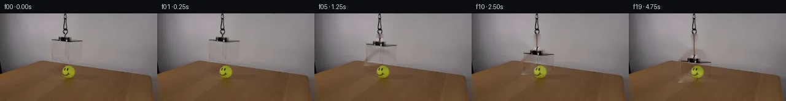

![首帧]()

Round 00
2026-11-05T02:09:44.486528+00:00像素候选变化代码 +215/−0inspection 更新
pixels 8d3188388a1499fe · code cf66f6a20bc5b8d6
查看本轮 generate.py 真实 diff
--- previous/generate.py
+++ current/generate.py
@@ -0,0 +1,215 @@
+from pathlib import Path
+
+import cv2
+import numpy as np
+from PIL import Image, ImageDraw, ImageFont
+
+import artifact_io
+
+
+ROOT = Path(__file__).resolve().parent
+W, H = 256, 144
+
+
+def alpha_over(frame, color, alpha):
+ """Blend one solid RGB color through a floating point alpha mask."""
+ a = np.clip(alpha, 0.0, 1.0)[..., None]
+ return frame * (1.0 - a) + np.asarray(color, np.float32) * a
+
+
+def aa_line_mask(points, width=1.0, blur=0.0):
+ """Make a subpixel-antialiased line mask by drawing at 4x resolution."""
+ scale = 4
+ canvas = Image.new("L", (W * scale, H * scale), 0)
+ draw = ImageDraw.Draw(canvas)
+ pts = [(int(round(x * scale)), int(round(y * scale))) for x, y in points]
+ draw.line(pts, fill=255, width=max(1, int(round(width * scale))), joint="curve")
+ arr = np.asarray(canvas.resize((W, H), Image.Resampling.LANCZOS), np.float32) / 255.0
+ if blur:
+ arr = cv2.GaussianBlur(arr, (0, 0), blur)
+ return np.clip(arr, 0.0, 1.0)
+
+
+def polygon_mask(points, feather=0.0):
+ mask = np.zeros((H, W), np.float32)
+ cv2.fillConvexPoly(mask, np.round(points).astype(np.int32), 1.0, lineType=cv2.LINE_AA)
+ if feather:
+ mask = cv2.GaussianBlur(mask, (0, 0), feather)
+ return np.clip(mask, 0.0, 1.0)
+
+
+def motion_offsets():
+ values = []
+ for t in range(20):
+ if t == 0:
+ values.append(0.0)
+ elif t <= 17:
+ u = t / 17.0
+ smooth = u * u * (3.0 - 2.0 * u)
+ values.append(35.0 * smooth)
+ elif t == 18:
+ values.append(35.35) # tiny compliant overshoot at table contact
+ else:
+ values.append(35.0)
+ return values
+
+
+def make_clean_plate(source):
+ # This mask covers only the suspended connector and the photographed box.
+ # The chain above y=34, table, ball, and the wall/table boundary remain source pixels.
+ mask = np.zeros((H, W), np.uint8)
+ cv2.rectangle(mask, (80, 40), (138, 78), 255, -1)
+ cv2.ellipse(mask, (106, 40), (14, 7), 0, 0, 360, 255, -1)
+
+ # Telea inpainting is especially stable here because this region is almost-flat wall.
+ inpainted = cv2.inpaint(source, mask, 5, cv2.INPAINT_TELEA)
+ clean = source.copy()
+ clean[mask != 0] = inpainted[mask != 0]
+ return clean, mask
+
+
+def draw_frame(source, clean, detail, dy, t):
+ if t == 0:
+ return source.copy()
+
+ f = clean.astype(np.float32)
+ progress = np.clip(dy / 35.0, 0.0, 1.0)
+ top = 41.5 + dy
+ bottom = 77.0 + dy
+
+ # The broad, soft shadow becomes visible only as the enclosure approaches the table.
+ proximity = np.clip((bottom - 84.0) / 28.0, 0.0, 1.0)
+ shadow_poly = np.array(
+ [[83, bottom - 1], [134, bottom - 1], [145, bottom + 6], [91, bottom + 7]],
+ np.float32,
+ )
+ shadow = polygon_mask(shadow_poly, feather=3.2) * (0.075 * proximity)
+ f = alpha_over(f, (48, 38, 32), shadow)
… diff truncated; 128 more lines …